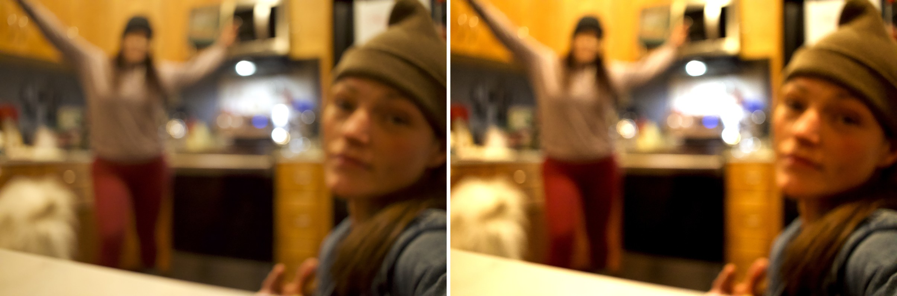

REFRACT
Photography Analysis & Enhancement
chevyandcoco.jpg
Multi-LLM Analysis
17.5/100
Consensus Score
gemini
15.0/100
The image is severely out of focus, making it difficult to appreciate the composition. Sharpening and color correction are crucial for improvement.
- Sharpen the image significantly to improve focus.
- Adjust the white balance to reduce the warm, yellowish tint.
- Increase contrast by 15% to add definition.
openai
20.0/100
The photograph lacks clarity, with the main subjects out of focus, which detracts from the overall impact. Improvements in focus and contrast will help define the subjects better and make the composition more engaging.
- increase sharpness significantly to focus on central subjects
- reduce exposure slightly to decrease overexposure in highlights
- increase contrast to add depth to the image
anthropic
Failed
Analysis failed: Error code: 400 - {'type': 'error', 'error': {'type': 'invalid_request_error', 'message': 'messages.0.content.0.image.source.base64: image exceeds 5 MB maximum: 21179324 bytes > 5242880 bytes'}, 'request_id': 'req_011CWmtyo3kMX5oHqsuhnfRg'}
Combined Improvements Applied:
- Sharpen the image significantly to improve focus.
- Adjust the white balance to reduce the warm, yellowish tint.
- Increase contrast by 15% to add definition.
- increase sharpness significantly to focus on central subjects
- reduce exposure slightly to decrease overexposure in highlights
- increase contrast to add depth to the image
- apply noise reduction to smooth digital noise
- adjust white balance for a more neutral tone in indoor lighting
Before & After Comparison
Original

Enhanced

Side-by-Side
